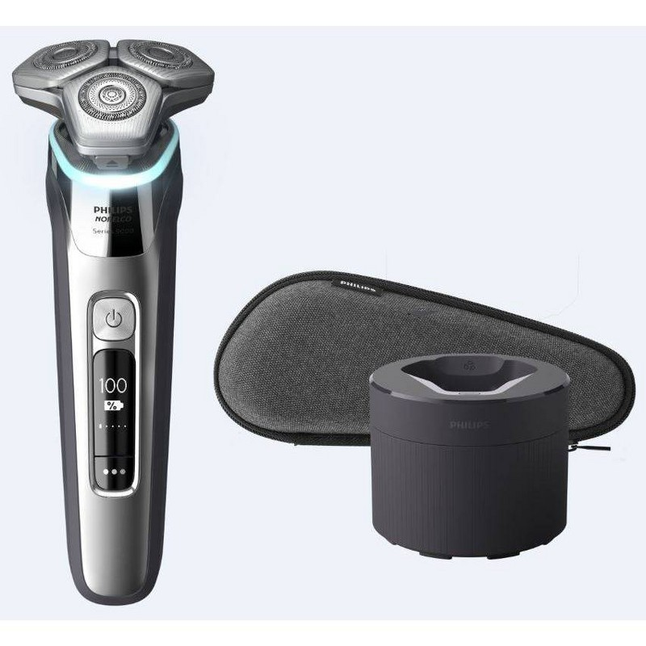
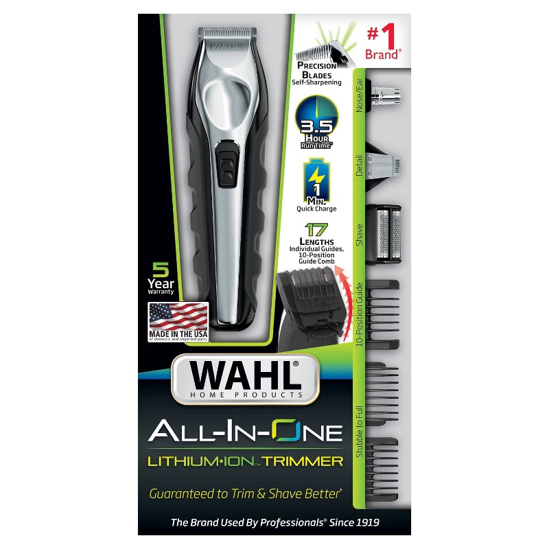
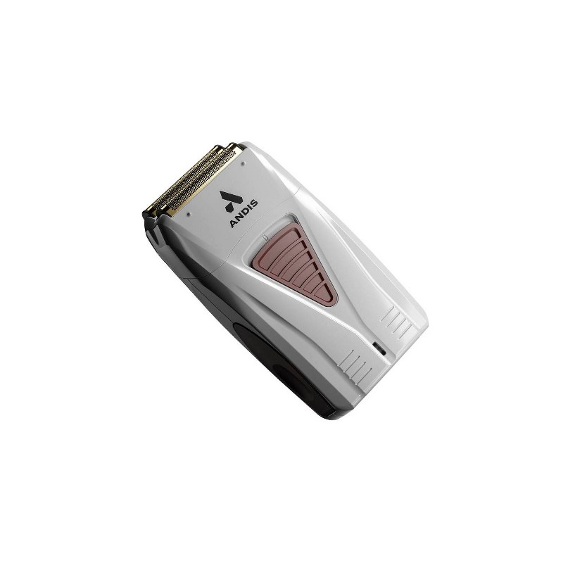

Best Electric Shavers for Men
— Every Budget Covered
The electric shaver market is full of overpromising and underdelivering. After hands-on testing across foil and rotary designs — from $60 budget picks to $250 premium models — we found the shavers that actually deliver closeness, skin comfort, and durability worth the investment.
⚡ Quick Picks
Braun Series 9 Pro+
Best Overall · $249 · Closest foil shave, whisper-quiet
Philips Norelco 9500
Best Rotary · $219 · Great for sensitive skin
Wahl Lithium Ion All-In-One
Best Value · $79 · Trims, shaves, details
Braun Series 9 Pro+

The Braun Series 9 Pro+ is the benchmark for foil shavers. The ProLift Blade captures flat-lying hairs and the SkinComfort Technology reduces friction so significantly that even testers with sensitive skin reported zero irritation. At 5 synchronized shaving elements working together, it cuts in one pass what takes multiple passes with most other shavers. The result: a genuinely close, barber-quality shave in under 3 minutes.
Pros
- Closest foil shave in its class
- Virtually silent motor
- Excellent for sensitive skin
- Cleaning station keeps it fresh
Cons
- Replacement heads run $30–$50
- Cleaning station uses cartridges
Philips Norelco 9500 Wet & Dry

Philips Norelco's rotary design is the right choice if you have a longer beard or shave every few days rather than daily. The V-Track precision blades flex in 8 directions to follow every curve of your face, and the wet/dry capability means you can use it with gel for zero-irritation shaving. Our testers with coarser beard growth overwhelmingly preferred it over the Braun for a more comfortable (if slightly less close) shave.
Pros
- Best for sensitive or reactive skin
- Works great with 2–3 day stubble
- Excellent wet/dry performance
- 8-direction flex head
Cons
- Slightly less close than foil
- Rotary takes adjustment for daily shavers
Wahl Lithium Ion All-In-One Groomer

Wahl is the brand professional barbers use, and the Lithium Ion All-In-One brings that performance to a consumer-friendly package. At $79, it covers everything — shaving, trimming, detailing, ear and nose — with 12 guide combs and attachments in the box. For men who want one grooming tool that does it all rather than a dedicated shaver, this is an exceptional value. Battery life lasts over 4 hours.
Pros
- Best value all-in-one grooming kit
- Barber-grade blade quality
- 4+ hour battery life
- 12 attachments cover every use
Cons
- Not as close as dedicated foil shavers
- Lacks wet/dry capability
Andis Profoil Lithium Plus Foil Shaver

Andis is a staple in professional barber shops, and the Profoil delivers barbershop-quality foil shaving at a fraction of Braun's price. The titanium foil gives a close, smooth finish that's especially good for head shaving and cleanup work. At $68 it's the best-performing foil shaver under $100 — it won't match the Series 9 Pro+ for full-face daily use, but for targeted cleanup and bald head maintenance it's exceptional.
Pros
- Professional-grade foil at $68
- Excellent for head shaving
- Titanium foil for durability
- Barber-proven reliability
Cons
- Single-foil — slower on full face
- No wet/dry capability